阿蘇ブルーベリーオーシャンファーム ／ Lovart用 1秒翻訳プロンプト集 v1
参考動画「空飛ぶいちご東京」（pE7RMN-TCpQ・65秒）を1秒単位で分解し、各シーンをそのまま「ブルーベリー版」に翻訳。Lovartにそのまま貼り付けて画像生成→Premiereで繋ぐ流れを想定。
参考動画：空飛ぶいちご東京
→ 阿蘇ブルーベリーオーシャンファーム
全16シーン・約65秒
Lovart Canvas: ブルーベリー
使い方：各シーンの「右側カラム＝ブルーベリー版」の 📝 LovartプロンプトをコピーしてLovartに貼り付け→画像を生成。テロップ（青文字部分）は画像生成後にPremiere Pro／Lovartで合成。
翻訳ルール：いちご→ブルーベリー（深い青紫）／ハウス空中栽培→屋外シート敷き農園65品種／新宿駅から30分→JR阿蘇駅 徒歩10分／空中栽培→日本トップクラス65品種／ロゴ→阿蘇ブルーベリーオーシャンファーム／検索→阿蘇ブルーベリー。
🌐 全シーン共通プロンプト（先頭に追加すると一貫性UP）
STYLE: Photorealistic Japanese tourism commercial, 16:9 frame composition, cinematic, soft natural daylight, shallow depth of field. NO anime, NO illustration, NO cartoon, NO 3D render, NO airbrushed look. Color palette: deep blue-purple blueberries with green leaves, soft pink-and-cream graphic overlays in pop & cute style (matching the reference). Shot on Sony A7 + 50mm lens.
NEGATIVE: strawberries, red berries, men's faces, celebrity likeness, text watermarks, blurry low quality.
BRAND COLORS: light pink #FFD9DE / cream #FFF6E8 / berry purple #7E54C4 / leaf green #7EB86A.
S010–2秒（フック導入）f_001 / f_002
📺 参考動画（いちご）
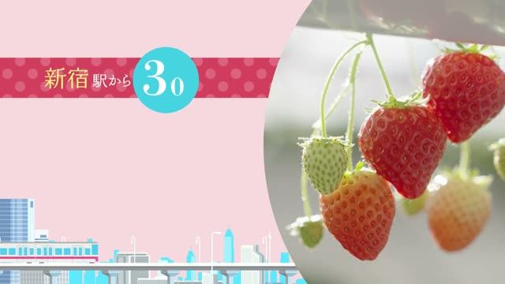
いちごクローズアップ右、左にピンクドット背景＋街並みグラフィック。テロップ「新宿駅から3 → 30」カウントアップ
テロップ：新宿駅から「3...30」（数字がアニメで上がる）
🫐 ブルーベリー版
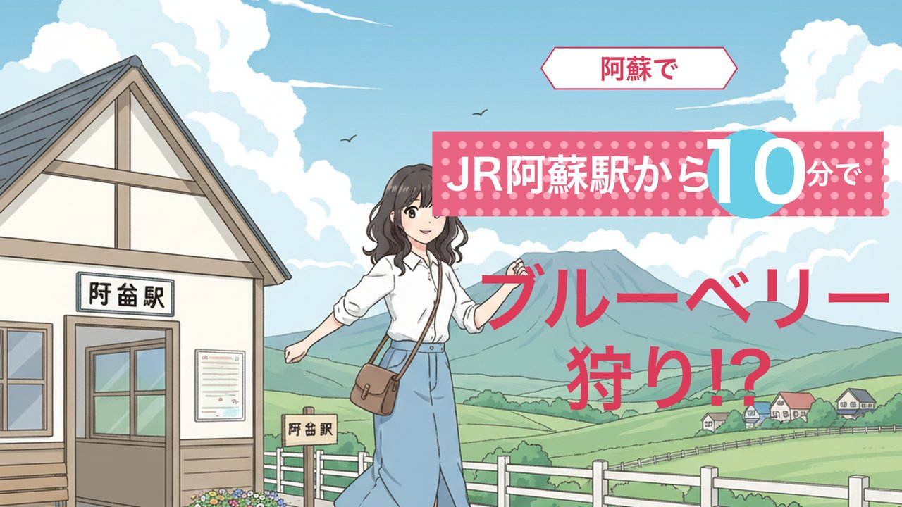
ブルーベリークローズアップ右、左にピンクドット＋阿蘇山シルエットの線画。テロップ「JR阿蘇駅から徒歩 1...10」カウントアップ
テロップ：JR阿蘇駅から徒歩「1...10」（数字アニメ・分はS02で）
📝 Lovartプロンプト
A vertical-split composition. RIGHT HALF: macro close-up of ripe blueberries hanging from the bush, deep blue-purple color with visible natural bloom on the skin, fresh green leaves around them, soft morning backlight creating a gentle glow, shallow depth of field. LEFT HALF: solid soft pink background (#FFD9DE) with a horizontal pink dotted ribbon band across the upper third, and at the bottom a simple line-art silhouette of Mount Aso volcanic mountain range in light teal/blue. Cute Japanese travel commercial style, 16:9, photorealistic berry + flat graphic background.
S023–5秒（フック完成）f_003〜f_005
📺 参考動画
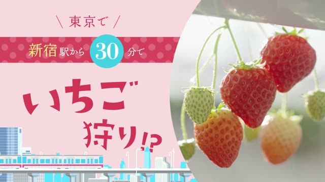
同構図のまま「東京で / 新宿駅から30分で / いちご狩り!?」吹き出しがポンッと出現
テロップ：東京で／新宿駅から30分で／いちご狩り!?
🫐 ブルーベリー版
同構図のまま「阿蘇で／JR阿蘇駅から徒歩10分／ブルーベリー狩り!?」吹き出しが出現
テロップ：阿蘇で／JR阿蘇駅から徒歩10分／ブルーベリー狩り!?
📝 Lovartプロンプト
Same composition as previous shot (blueberry close-up on right, pink dotted background on left with Mount Aso silhouette below). Add three pop-up text bubble graphics on the left side in cute Japanese travel commercial style: top small banner "阿蘇で" in red sans-serif, middle banner with pink polka-dot ribbon containing "JR阿蘇駅から徒歩" + a circular cyan badge with "10" + "分で", bottom large playful curved text "ブルーベリー狩り!?" in red brush-style font. All text in Japanese, balanced layout. 16:9, photorealistic blueberries + flat graphic overlay.
S036–9秒（ブランドカード）f_006〜f_009
📺 参考動画
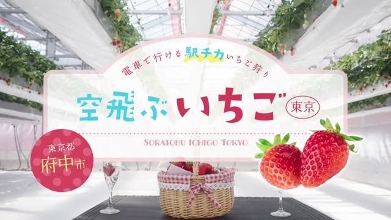
ハウス通路の奥行きを背景に、中央に大きなレトロ看板風ロゴ「空飛ぶいちご東京」＋サブ「電車で行ける駅チカいちご狩り」＋右下に大きないちご2粒＋左下に「東京都府中市」バッジ＋中央下にバスケット
テロップ：ロゴ「空飛ぶいちご東京」＋「電車で行ける駅チカいちご狩り」＋「東京都府中市」
🫐 ブルーベリー版
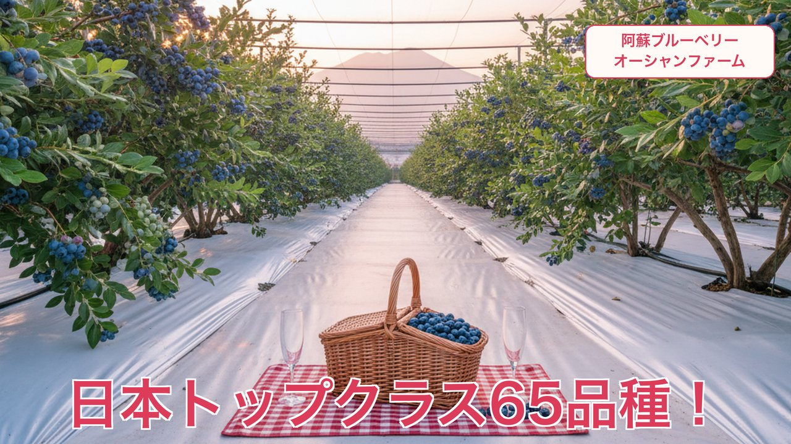
阿蘇の高原・ブルーベリー農園の通路俯瞰を背景に、中央に大きなレトロ看板風ロゴ「阿蘇ブルーベリーオーシャンファーム」＋サブ「JR阿蘇駅から徒歩10分の観光農園」＋右下に大きなブルーベリー粒の塊＋左下に「熊本県阿蘇市」バッジ＋中央下にブルーベリーバスケット
テロップ：ロゴ「阿蘇ブルーベリーオーシャンファーム」＋「JR阿蘇駅から徒歩10分の観光農園」＋「熊本県阿蘇市」
📝 Lovartプロンプト
Wide perspective shot down the rows of an outdoor blueberry orchard in Aso highlands with neat blueberry bushes on both sides receding into the distance, white pollination netting overhead, soft pink-tinted backlight, Mount Aso visible at the far end. In the foreground center: a retro signboard-style logo card on a cream-white scalloped banner, with thin arched Japanese text on top "JR阿蘇駅から徒歩10分の観光農園" and large brush-style Japanese title "阿蘇ブルーベリーオーシャンファーム" with a small "熊本" tag, sub-line "ASO BLUEBERRY OCEAN FARM" in elegant English serif. Bottom-left: a circular pink polka-dot badge with "熊本県 阿蘇市" in red. Bottom-right: two large fresh blueberries with green leaves overlaid as if floating in front. Center bottom: a small picnic basket with blueberries on a checkered cloth. Cute Japanese travel commercial flat-graphic + photo composite. 16:9.
S0410–12秒f_010〜f_012
📺 参考動画
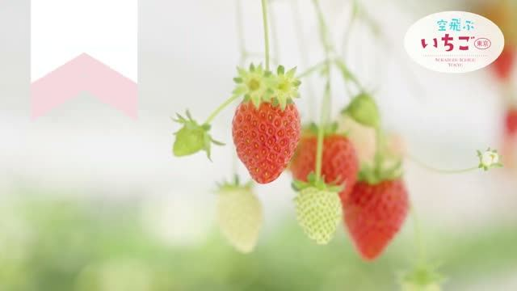
いちごクローズアップ（縦に吊り下がる粒）、画面右上に小さく「空飛ぶいちご東京」ロゴが固定、左上にピンクの三角アクセント
テロップ：ロゴ固定（右上）＋ピンク三角（左上）
🫐 ブルーベリー版
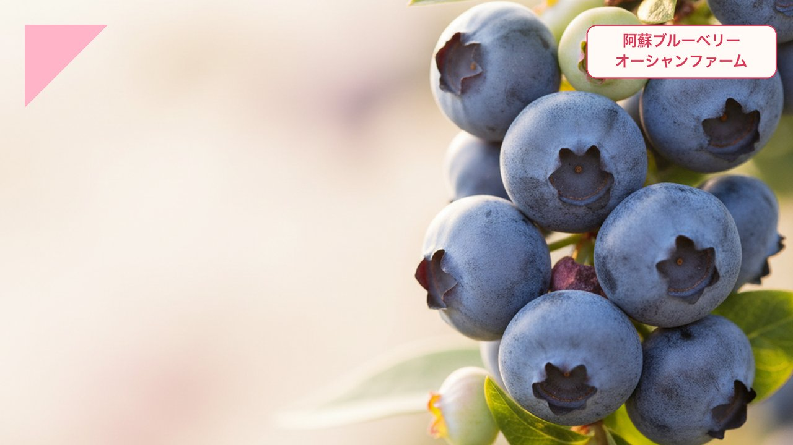
ブルーベリー粒のクローズアップ（ぶら下がる粒・葉つき）、右上に小さく「阿蘇ブルーベリーオーシャンファーム」ロゴ固定、左上にピンク三角アクセント
テロップ：ロゴ固定（右上）＋ピンク三角（左上）
📝 Lovartプロンプト
Macro close-up of ripe blueberries hanging from a blueberry bush branch, deep blue-purple with natural bloom, fresh green leaves around, soft warm backlight creating a delicate glow, shallow depth of field with soft green-cream blurred background. Compose with negative space in upper-left and upper-right corners so a small white scalloped logo badge can sit in upper right corner (placeholder for "阿蘇ブルーベリーオーシャンファーム" logo) and a small pink chevron/triangle accent in upper-left corner. 16:9 photorealistic food photography.
S0513–15秒（アクセス訴求）f_013〜f_015
📺 参考動画
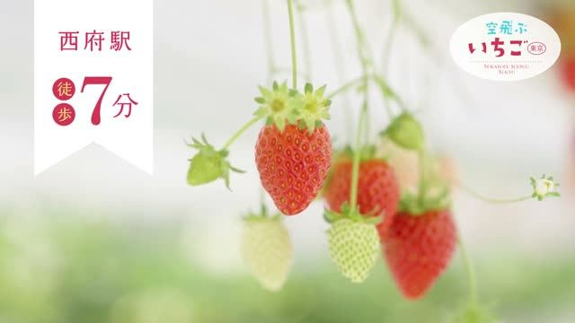
いちごクローズアップ＋左に白い吹き出しリボン「西府駅 / 徒歩 / 7分」
テロップ：西府駅 徒歩 7分（白リボン吹き出し）
🫐 ブルーベリー版
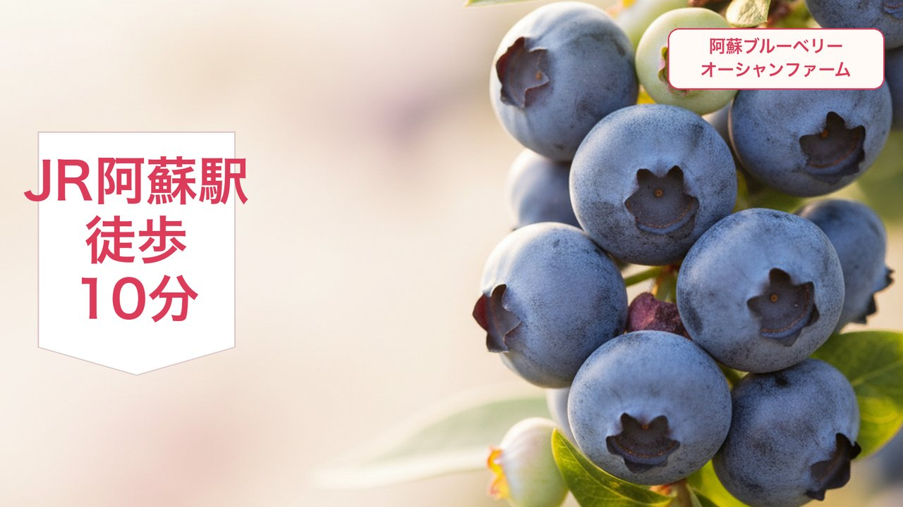
ブルーベリークローズアップ＋左に白い吹き出しリボン「JR阿蘇駅 / 徒歩 / 10分」
テロップ：JR阿蘇駅 徒歩 10分（白リボン吹き出し）
📝 Lovartプロンプト
Macro close-up of ripe blueberries on the bush with soft cream background. Add on the left side a vertical white scalloped ribbon banner graphic (like a paper tag) containing three lines of Japanese text: top small red sans-serif "JR阿蘇駅", middle small red "徒歩", bottom large red "10分" with the number "10" extra large. The ribbon has a pink fringe edge at the bottom forming a downward chevron. Keep the blueberry photo on the right side of frame. Cute Japanese travel commercial style. 16:9.
S0616–22秒（USP核心）f_016〜f_022
📺 参考動画
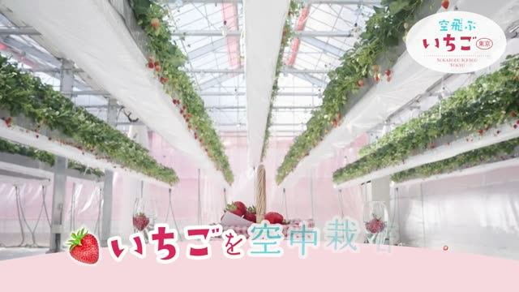
ハウス通路を一点透視で奥に向かう俯瞰／中央にバスケット＋ワイングラス／中盤に「いちごを空中栽培!」テロップ（赤・楽天系フォント）が下から出現
テロップ：いちごを空中栽培!（下中央・赤字＋両脇に小いちごアイコン）
🫐 ブルーベリー版
屋外ブルーベリー農園の通路を一点透視で奥へ／白いシート敷きの広々とした道／中央にブルーベリーバスケット＋ガラスのグラス／中盤に「日本トップクラス65品種!」テロップ
テロップ：日本トップクラス 65品種!（下中央・赤字＋両脇に小ブルーベリーアイコン）
📝 Lovartプロンプト
One-point perspective shot looking straight down the central walkway of an outdoor blueberry orchard in Aso highland. Tidy rows of blueberry bushes on both sides receding to a vanishing point in the distance, neat white pollination netting hung overhead. The walkway is covered in clean white ground sheets (シート敷き). In the center foreground sits a small wicker picnic basket overflowing with fresh blueberries on a red-and-white gingham cloth, with two clear champagne glasses on either side. Soft pink-tinted morning light filtering through the netting. Mount Aso silhouette barely visible at the far vanishing point. Highly cinematic, photorealistic, 16:9. Leave clear space at the bottom-center for an overlay graphic.
S0723–25秒（摘み取りの手元）f_023〜f_025
📺 参考動画
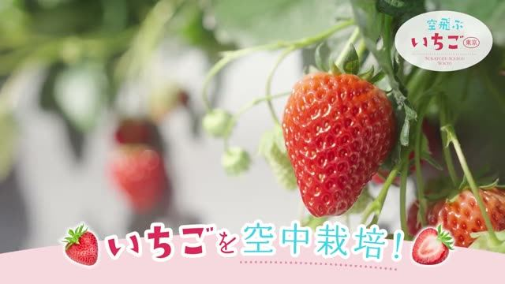
いちごをそっと手で持ち上げる女性の手元クローズアップ＋左上に「ラクラク♪」赤ピンク吹き出し＋下「いちごを空中栽培!」
テロップ：ラクラク♪（左上吹き出し）／下：いちごを空中栽培!
🫐 ブルーベリー版
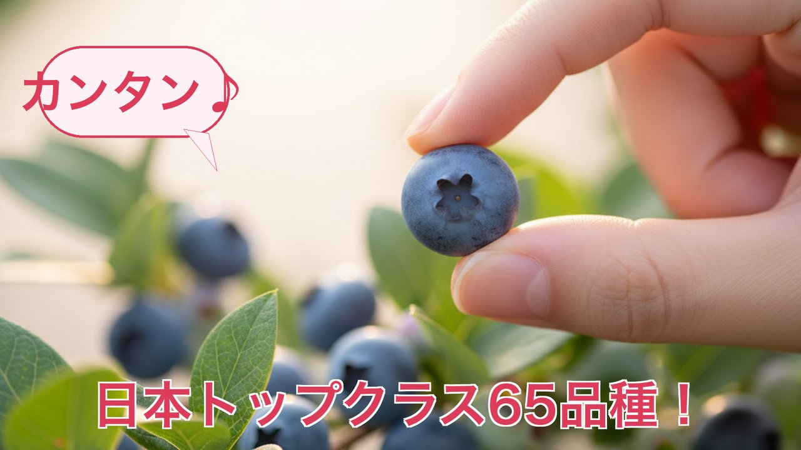
ブルーベリーをそっと手で摘み取る女性の手元クローズアップ＋左上に「カンタン♪」赤ピンク吹き出し＋下「日本トップクラス65品種!」
テロップ：カンタン♪（左上吹き出し）／下：日本トップクラス65品種!
📝 Lovartプロンプト
Macro close-up of a young Japanese woman's gentle hand reaching up to pick a single ripe blueberry from the bush. Soft natural skin tone, clean unmanicured nails, very natural motion. The deep blue-purple berry between her thumb and forefinger is in sharp focus, surrounded by green leaves and other berries softly blurred. Warm gentle daylight. Leave the upper-left corner clear for a "カンタン♪" pop-bubble graphic overlay, and bottom-center clear for a horizontal label overlay. DO NOT include face. 16:9 photorealistic.
S0826–32秒（園内の広さ）f_026〜f_032
📺 参考動画
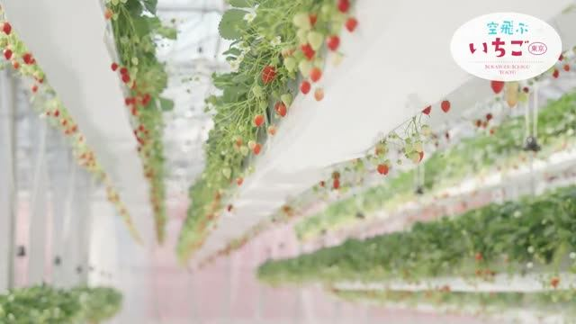
ハウス内通路の俯瞰（縦に吊り下がるいちご棚が両側にずらり）／ロゴだけ右上に常駐／テロップなしの間／落ち着いた魅せカット
テロップ：なし（魅せカット・BGMで間をとる）
🫐 ブルーベリー版
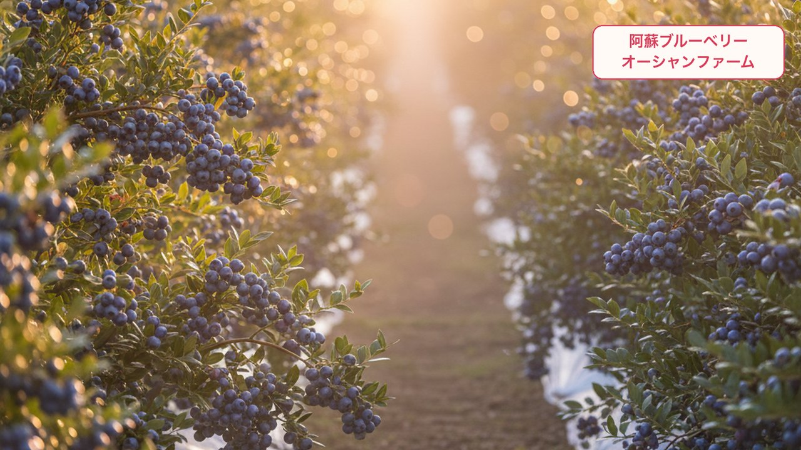
屋外ブルーベリー園の通路俯瞰（両側に整然と並ぶブルーベリーの株、奥に阿蘇山）／ロゴだけ右上常駐／テロップなしの間
テロップ：なし（魅せカット）
📝 Lovartプロンプト
Elevated wide shot of an outdoor blueberry orchard in Aso highland. Multiple parallel rows of mature blueberry bushes neatly arranged, each bush about 1.5m tall and laden with ripe blue-purple berries, separated by wide white-sheet pathways. Soft pollination netting overhead in places. The distant background shows the iconic Mount Aso volcanic mountain range under a soft pastel-pink/cream sky. Bright but gentle natural daylight. Empty of people. Calm, peaceful, almost dreamy travel commercial composition, 16:9. Leave upper-right corner clear for logo placement.
S0933–35秒（滞在時間訴求）f_033〜f_035
📺 参考動画
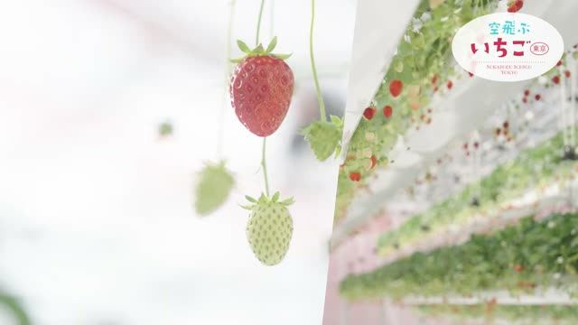
いちごクローズアップ＋左に大きな円形「ゆっくり過ごせる / 90分」（赤数字・円形バッジ）＋下にいちごアイコン
テロップ：ゆっくり過ごせる 90分（円形バッジ）
🫐 ブルーベリー版
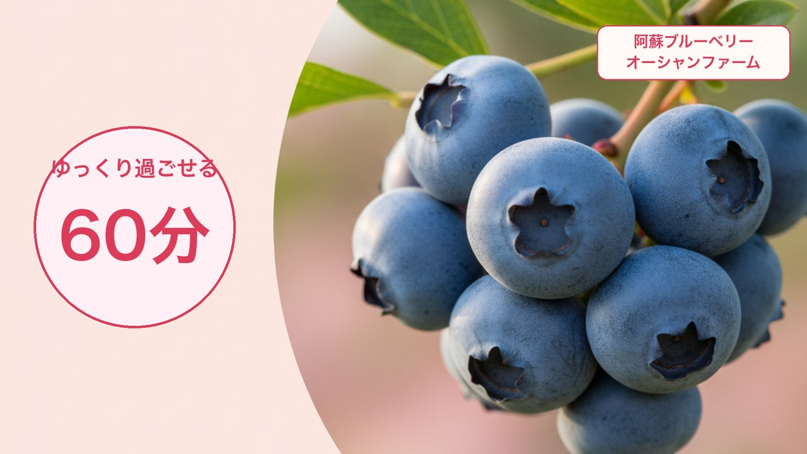
ブルーベリークローズアップ＋左に円形「ゆっくり過ごせる / 60分」（赤数字・円形バッジ）＋下にブルーベリーアイコン
※実際の食べ放題時間はクライアント確認待ち。仮置き60分
テロップ：ゆっくり過ごせる 60分（円形バッジ・要確認）
📝 Lovartプロンプト
Macro close-up of hanging blueberries on the bush, deep blue-purple color, soft green-cream background. Leave the left third of the frame clear with a soft pink-cream tone for a large circular badge graphic overlay containing "ゆっくり過ごせる" in small text above and "60分" in extra-large red brush-style number+character below, with a small blueberry icon at the bottom. 16:9 photorealistic.
S1036–39秒（カフェ訴求1）f_036〜f_039
📺 参考動画
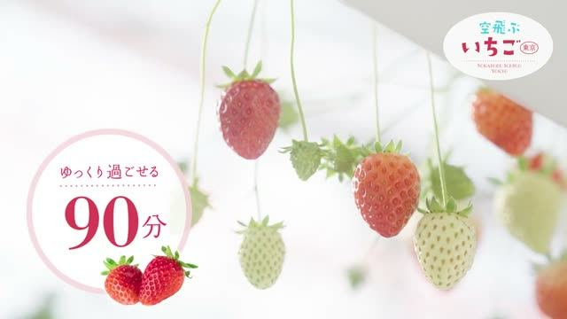
「府中いちご狩り園」と書かれた白いキッチンカー＋右に「園内に / キッチンカー」雲型吹き出し
テロップ：園内にキッチンカー（雲型吹き出し）
🫐 ブルーベリー版
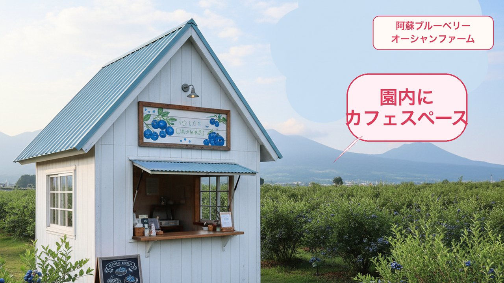
「阿蘇ブルーベリーカフェ」と書かれた白いウッド調カフェ小屋or木陰のカフェスペース＋右に「園内にカフェスペース」雲型吹き出し
※カフェは商品未完成のためふんわり表現
テロップ：園内にカフェスペース（雲型吹き出し）
📝 Lovartプロンプト
Exterior of a charming small white wooden cafe hut (or food truck) at a blueberry farm in Aso, with hand-painted Japanese signage "阿蘇ブルーベリーカフェ" with cute blueberry icons across the front panel, parked against soft pastel pink-tinted background. Vintage-style cute travel commercial photography. Leave the right side of frame clear for a cloud-shaped speech bubble graphic. 16:9, photorealistic + flat graphic friendly composition.
S1140–42秒（カフェ訴求2）f_040〜f_042
📺 参考動画
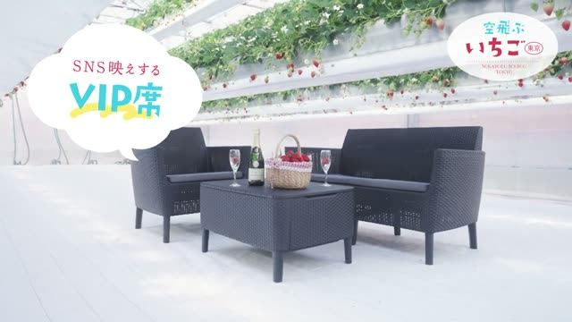
ハウス内に置かれた黒いラタンソファ2脚＋ローテーブル（シャンパン＋いちごバスケット）＋左に雲型「SNS映えする / VIP席」
テロップ：SNS映えする VIP席（雲型吹き出し）
🫐 ブルーベリー版
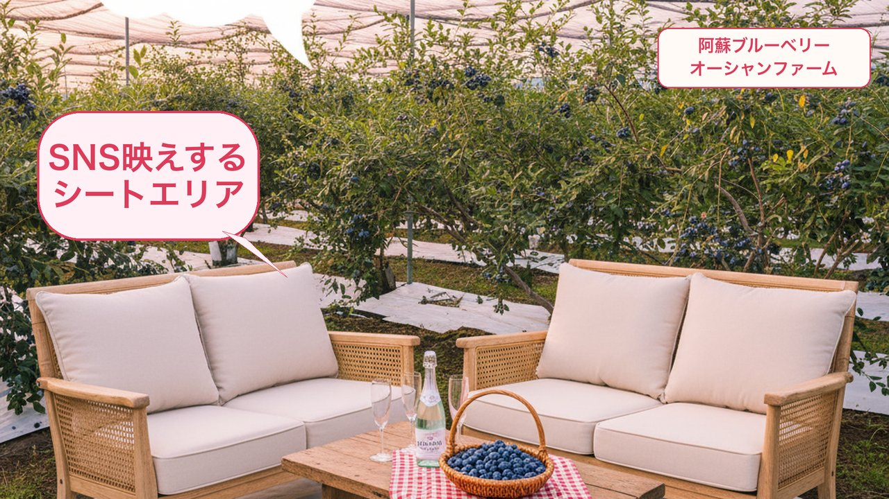
農園のレストエリアに置かれた白〜ナチュラルウッドのソファ2脚＋ローテーブル（ブルーベリードリンク＋バスケット）＋左に雲型「SNS映えする / シートエリア」
※VIP席→シートエリアに翻訳（HP訴求のシート敷き完備に合わせる）
テロップ：SNS映えする シートエリア（雲型吹き出し）
📝 Lovartプロンプト
A photogenic rest area at the blueberry farm: two stylish natural wood / cream rattan sofas facing each other with a low table between them, on the table two clear glasses of vibrant blue-purple blueberry juice with a small wicker basket of fresh blueberries. Soft pink-tinted background of orchard rows hanging blueberry branches behind. White ground sheet beneath. Empty of people, instagram-photo-ready composition. Leave the upper-left clear for a cloud-bubble graphic overlay. 16:9 photorealistic.
S1243–45秒（カフェ訴求3）f_043〜f_045
📺 参考動画
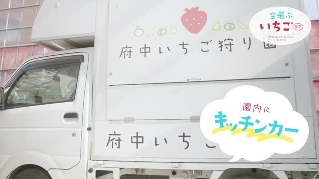
ショーケースに並ぶ軽食（クレープ・ホットドッグ等）＋右下に雲型「軽食も / 一緒に楽しめる♪」
テロップ：軽食も 一緒に楽しめる♪
🫐 ブルーベリー版
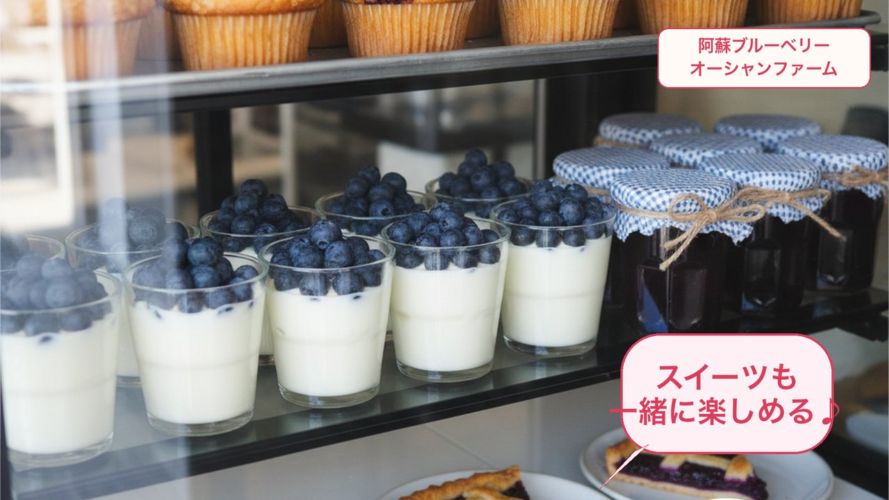
ショーケースに並ぶブルーベリースイーツのイメージ（マフィン・ヨーグルト・ジャム小瓶）＋右下に雲型「スイーツも / 一緒に楽しめる♪」
※具体商品は未完成のため一般的なブルーベリースイーツで仮置き
テロップ：スイーツも 一緒に楽しめる♪
📝 Lovartプロンプト
Close-up of a charming cafe display: rows of cute disposable cups in pink and green patterns holding blueberry yogurt, alongside fresh blueberry muffins, small jars of blueberry jam, and slices of blueberry cake. All photographed through a glass display case with soft natural light. Color palette dominated by blue-purple berries and cream tones. Leave the bottom-right clear for a cloud-bubble graphic overlay. 16:9 photorealistic food photography.
S1346–49秒（友達ターゲット）f_046〜f_049
📺 参考動画
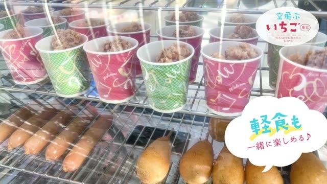
手のひらに乗せた大きないちご1粒のクローズアップ＋右上に「お友達との / 映えスポット / めぐり」吹き出し＋右下にスマホを構える2人の若い女性イラスト
テロップ：お友達との 映えスポットめぐり（右上＋友達アイコン）
🫐 ブルーベリー版
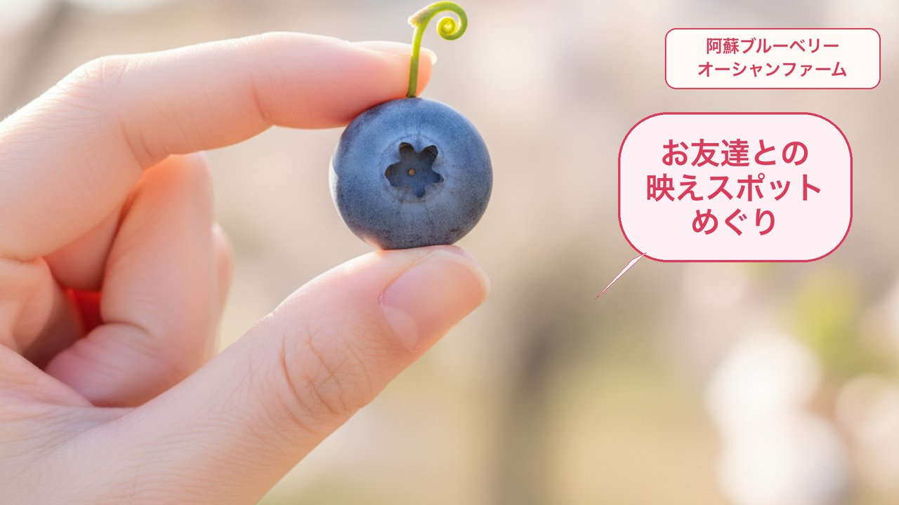
手のひらに乗せた大粒ブルーベリー（葉つき）クローズアップ＋右上に「お友達との / 映えスポット / めぐり」吹き出し＋右下にスマホを構える2人の若い女性イラスト
テロップ：お友達との 映えスポットめぐり（右上＋友達アイコン）
📝 Lovartプロンプト
Close-up of a young woman's hand holding up a single large ripe blueberry with a tiny green stem and leaf still attached, between her thumb and forefinger, presented vertically to camera. Soft pink-cream blurred background of orchard. Soft natural daylight. DO NOT show face. Leave the upper-right clear for a pop-bubble text graphic overlay, and lower-right clear for a flat illustration of two young women with a smartphone. 16:9 photorealistic.
S1450–52秒（家族ターゲット）f_050〜f_052
📺 参考動画
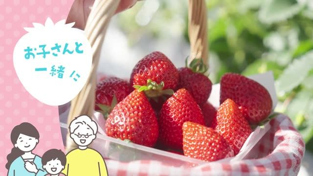
バスケットいっぱいの大粒いちご＋左上に「お子さんと / 一緒に」吹き出し＋左下に親子3人（パパ・ママ・男の子）のイラスト
テロップ：お子さんと一緒に（左上＋家族アイコン）
🫐 ブルーベリー版
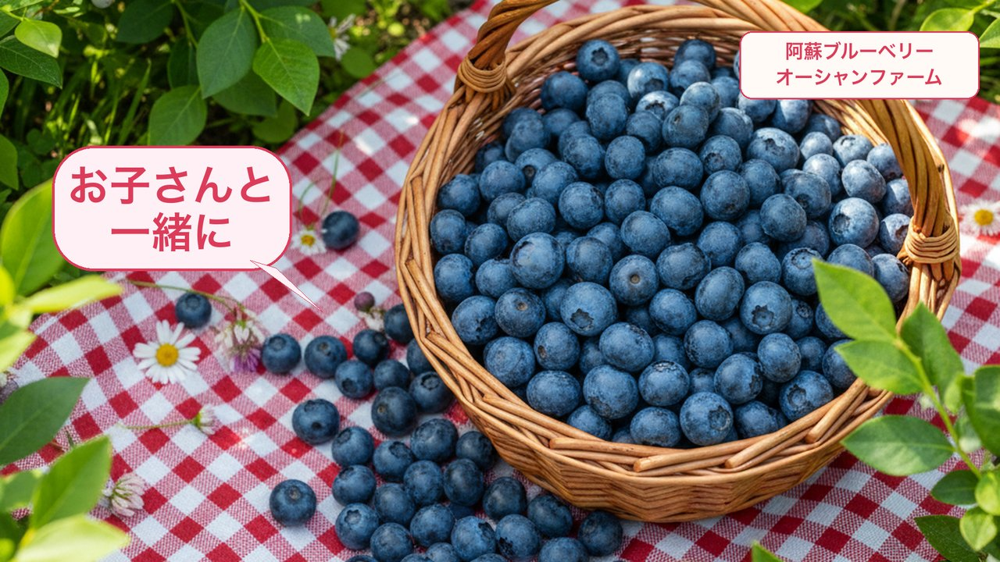
バスケットいっぱいの大粒ブルーベリー＋左上に「お子さんと / 一緒に」吹き出し＋左下に親子3人のイラスト
テロップ：お子さんと一緒に（左上＋家族アイコン）
📝 Lovartプロンプト
Top-down close-up of a wicker basket overflowing with abundant freshly picked ripe blueberries on a red-and-white gingham cloth, photographed at the orchard, surrounded by soft green leaves. Bright natural daylight, beautiful and abundant. Leave the upper-left clear for a pop-bubble text graphic overlay, and lower-left clear for a flat illustration of a family trio (father, mother, small child). 16:9 photorealistic food photography.
S1553–55秒（カップルターゲット）f_053〜f_055
📺 参考動画
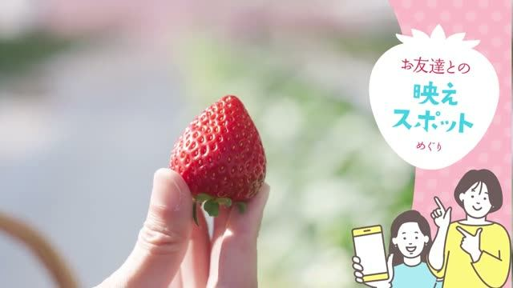
ハウス内の赤い椅子＋テーブルが並ぶ広々空間＋左上に「カップルの / デート / にも！」吹き出し＋左下に若いカップルイラスト
テロップ：カップルのデートにも！（左上＋カップルアイコン）
🫐 ブルーベリー版
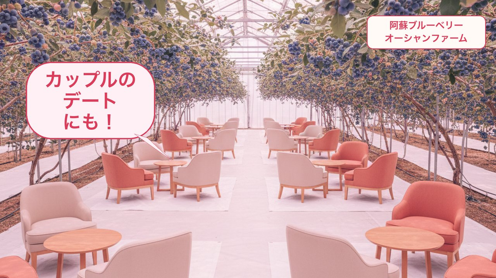
農園のレストエリア・木陰のベンチ&テーブルが並ぶ広々空間＋左上に「カップルの / デート / にも！」吹き出し＋左下に若いカップルイラスト
テロップ：カップルのデートにも！（左上＋カップルアイコン）
📝 Lovartプロンプト
Wide elevated shot of the rest area inside the blueberry farm: multiple stylish wooden benches and small round tables (or cream-pink chairs) arranged in a clean spacious area with white ground sheets, surrounded on both sides by rows of hanging blueberry branches above. Soft pink-tinted natural daylight, empty of people, very photogenic and resort-like. Leave upper-left clear for a pop-bubble graphic overlay, lower-left clear for a flat illustration of a young couple. 16:9 photorealistic.
S1656–65秒（CTA / 検索カード）f_056〜f_065
📺 参考動画
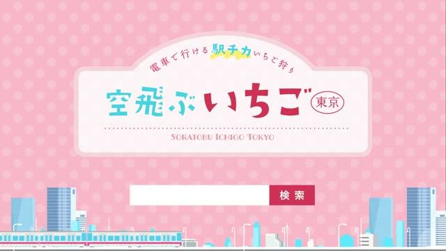
ピンクドット全画面＋下に街並みグラフィック＋中央大きく看板風ロゴ「空飛ぶいちご東京」＋サブ「電車で行ける駅チカいちご狩り / SORATOBU ICHIGO TOKYO」＋下中央に検索バー（最初は空、後に「空飛ぶいちご東京」とタイプ→「検索」ボタン点滅）
テロップ：ロゴ＋検索バー（「空飛ぶいちご東京」検索）
🫐 ブルーベリー版
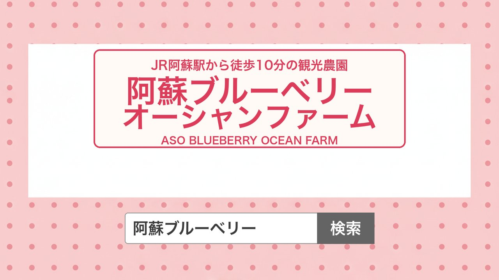
ピンクドット全画面＋下に阿蘇連山シルエット＋中央大きく看板風ロゴ「阿蘇ブルーベリーオーシャンファーム」＋サブ「JR阿蘇駅から徒歩10分の観光農園 / ASO BLUEBERRY OCEAN FARM」＋下中央に検索バー（最初は空、後に「阿蘇ブルーベリー」とタイプ→「検索」ボタン点滅）
テロップ：ロゴ＋検索バー（「阿蘇ブルーベリー」検索）
📝 Lovartプロンプト
Full-screen brand card design in cute Japanese travel commercial style. Background: soft pink (#FFD9DE) with regular pink polka-dot pattern. Bottom edge: a simple line-art silhouette of Mount Aso volcanic mountain range in light teal/blue, with a small train illustration to suggest accessibility. Center top: a large retro signboard graphic (cream-white with scalloped edges) containing:
- Top arch thin text: "JR阿蘇駅から徒歩10分の観光農園"
- Main large brush-style Japanese title: "阿蘇ブルーベリーオーシャンファーム" with a small "熊本" tag at the end
- Sub-line elegant English serif: "ASO BLUEBERRY OCEAN FARM"
Below the signboard, center: a horizontal search-bar UI element with a gray "検索" button on the right. Inside the search box: the text "阿蘇ブルーベリー" in plain Japanese.
Layout balanced, designed as the final CTA frame of a 30-60s tourism commercial. 16:9.